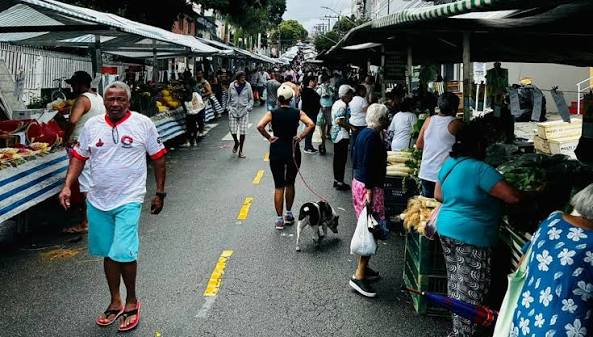

Toda sexta-feira, das 6h às 12h, na praça central da Colônia.

A feira reúne o que há de melhor na produção dos cooperados. Os produtos se dividem em três grandes grupos:
Preços praticados na última feira (podem váriar conforme a safra):
| Produto | Unidade | Preço ($) |
|---|---|---|
| Alfaçe | Maço | 3,00 |
| Ovos caipiras | Dúzia | 25,00 |
| Mel | Pote 500g | 25,00 |
| Queijo coalho | Kg | 40,00 |
Para manter a organização e a qualidade, todo feirante deve seguir os passos abaixo, nesta ordem:
A feira é a vitrine do nosso trabalho. Capricho na barraca é respeito com quem compra.
Para se tornar um feirante ou tirar dúvidas, procure a administração da cooperativa ou acesse o site oficial:
Feira da Cooperativa Pindorama - Colônia Pindorama, Coruripe, Alagoas.